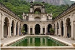
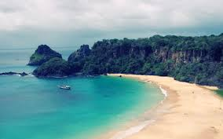
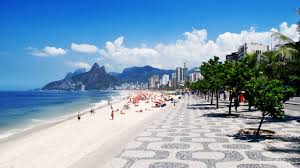
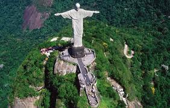
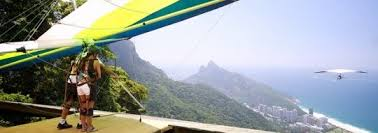
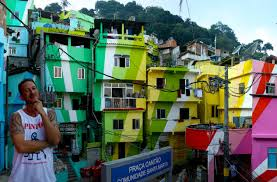
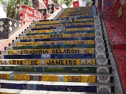
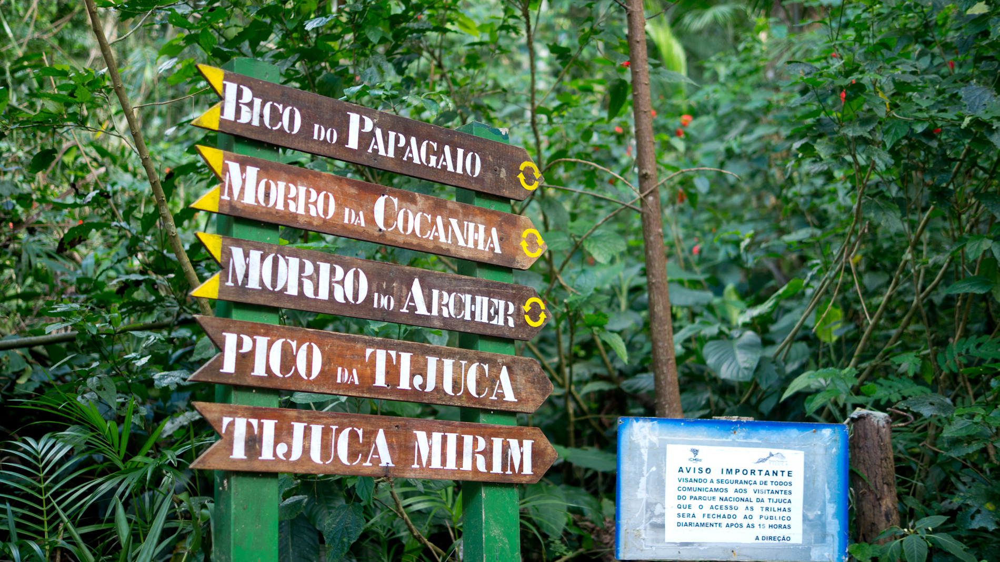
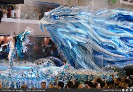

Home to amazing beaches and mountains of great heights, Brazil makes for the perfect vacation destination.
Find out moreVisite-Nos!
Welcome to Rio home of one of the largest rainforrests and rivers in the world. Brazil, also known as Brasil, houses Rio de Janeiro and its many cultural attractions that bring millions of tourists every year. Here Cristo Redentor, the Escadaria Selaron, Botanical Gardens, Sugar Loaf Mountain and more fun attractions await your arrival.
The Wonders of Brazil!
As the largest country in South America and Latin America, Brazil has become the fith largest country by geography and population. Brazil hold over 201 million people. Rio de Janeiro is one of the most popular and populated cities in Brazil along with Sao Paolo, Fortaleza, Brasilia, Belo Horizonte, and many others.
Although Brazil is commonly known for its exports in coffee and spices, its rising export has grown to be ore and oil seed which rake in 28 billion USD and 23.5 billion USD respectively.
See the Attractions
Enjoy the Amazing view of Rio de Janeiro
- Here is Parque Lage a great attraction for many tourists and natives.
- Copacabana beach
- With the great blue sky, you can walk and enjoy the beautiful summer breeze in Rio de Janeiro along the Copacabana.
- Relaxing view of Rio de Janeiro, Copacabana, and Brazil's beautiful mountains.
- The famous view of Christ the Redeemer
- Jump into something new with thrilling activities like handgliding off of mountains or hike Brazil's tallest mountain Pico de Neblina
- The homes of Brazilian people are called Favelas, smal tin houses stacked atop one another clinging colorfully to the moutainsides.
- These steps, built by the Chilean-born artist Jorge Selaron in the neighborhood of Lapa is crowded in beauty and mystery. Despite the sudden death of Selaron in 2013, native and tourists still visit the steps and take joyous pictures there in honor of his admirable work.
 A cable car can be ridden to go up Sugar Loaf Mountain for the perfect view.
A cable car can be ridden to go up Sugar Loaf Mountain for the perfect view.- Tijuca Forest perfect for hiking, embracing the beauties of nature, obsticle courses and for relaxing.
- One of the most amazing and exciting this to experience in Rio, besides rifding in cable cars, handgliding, swimming in the Botafogo Bay, and hiking in Tijuca park, is to go to CARNIVAL.
- Close up of a Carnival dancer. One example of the thousands of delicate garments created to celebrate Brazil.
Over Head View of Christ the Redeemer
Places to Visit in Rio de Janeiro:
Escadaria Selaron Parque Tijuca Botanical Gardens CorcovadoSugar Loaf Mountain Cable Car
One of most important things when it comes to traveling is packing accordingly. Here are a few tips:
Bring clothes for tropical weather ie. rain coats, shorts, bathing suits, lots of towels, hiking boots, etc.
Pack sunscreen (You'll need it!)
Carry extra water just in case Pack light or have an awesome hotel room.